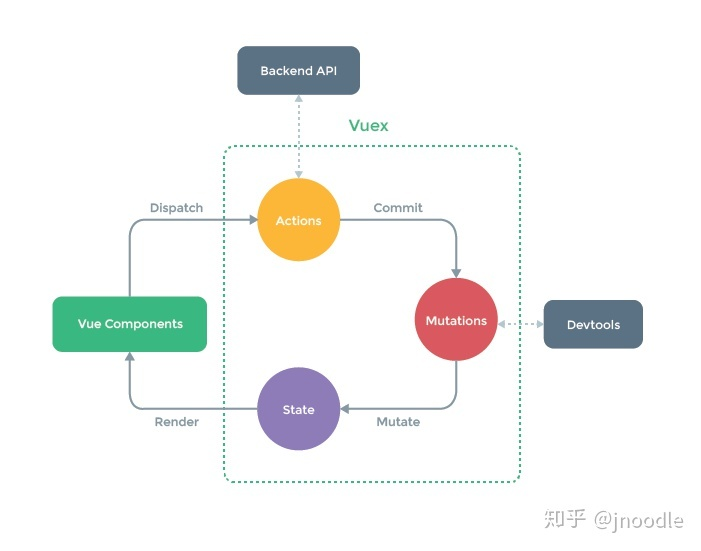

把组件之间需要共享的状态抽取出来，遵循特定的约定，统一管理，让状态的变化可以预测
store flux redux vuex redux-saga dva mobx
store模式
最简单的是把状态存到一个外部变量里面，
const store = {
state: {
message: 'store',
},
setMessageAction(newVal){
this.state.message = newVal
},
clearMessageAction(newVal){
this.state.message = ''
}
}
- store里的state用来存储数据
- store里面有一堆action，用来改变state，不直接对state进行改变，而是通过action
- 通过action，可以知道改变(mutation)是怎样触发的
如果没有限制组件里面不能修改store中的state，如果组件进行修改，没有通过action，那么无法追踪改变是如何发生的，所以规定必须通过action改变state
组件里通过action来分发(dispatch)事件通知store去改变state
Redux

- 用户通过view分发action
store.dispatch(action) - store自动调用Reducer，传入两个参数：当前state，和收到的action，reducer会返回新的state
const nextState = reducer(previousState, action) - 若state发生变化，store调用监听函数
store.subscribe(listener) - listener通过store.getState()得到当前状态，如果使用的是react，可以触发重新渲染view
function listener(){ const nextState = store.getState() component.setState(nextState) }store
redux里只有一个store，store中的state不能直接修改，每次只能返回一个新的state store允许使用store.subscribe方法设置监听函数，一旦state发生变化，就自动执行这个函数，这样只要把view的更新函数subscribe一下，一旦state发生变化，view就自动渲染，react中，render和setState就订阅就行
action
action就是view发春的通知，通知store state需要改变，action必须要有type属性，代表action的名字
const action = {
type: 'ADD_TODO',
payload: ''
}
reducer
纯函数，store收到action后，给出一个新的state，这个计算过程就是reducer
(prevState, action) => newState
redux: 单一数据源；state只读；使用纯函数执行修改 redux中：
- 同步：action发出之后，reducer立刻计算state
- 异步：action发出之后，隔一段事件再执行reducer
vuex

store
每一个vuex有一个全局的store
const app = new Vue({
el: '#app',
store,
components: {Header},
templates: `<div>{{num}}</div>`
})
const Header = {
templates: `<h1>header</h1>`,
comouted: {
num(){
return this.$store.count
}
}
}
mutation
vuex中修改state的方式叫做mutation，更改vuex的store中的状态的唯一方法是提交mutation，每个mutation都有一个字符串的时间类型(type)和一个回调函数(handler)
const store = new Vuex.Store({
state: {
count: 1
},
mutations: {
increment(state){
// 变更状态
state.count ++
}
}
})
触发mutation事件的方式不是直接调用，需要通过store.commit()方法
store.commit('increment')
mutation是同步事务 mutation类似于redux的reducer，但是不要求每次返回一个新的state可以直接修改state
Redux: view -> actions -> reducer -> state变化 -> view变化 Vuex: view -> commit -> mutations -> state变化 -> view变化 view -> dispatch -> actions -> mutations -> view变化
dva
app.model({
// namespace - 对应 reducer 在 combine 到 rootReducer 时的 key 值
namespace: 'products',
// state - 对应 reducer 的 initialState
state: {
list: [],
loading: false,
},
// subscription - 在 dom ready 后执行
subscriptions: [
function(dispatch) {
dispatch({type: 'products/query'});
},
],
// effects - 对应 saga，并简化了使用
effects: {
['products/query']: function*() {
yield call(delay(800));
yield put({
type: 'products/query/success',
payload: ['ant-tool', 'roof'],
});
},
},
// reducers - 就是传统的 reducers
reducers: {
['products/query'](state) {
return { ...state, loading: true, };
},
['products/query/success'](state, { payload }) {
return { ...state, loading: false, list: payload };
},
},
});